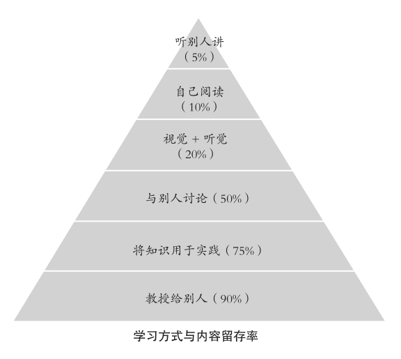
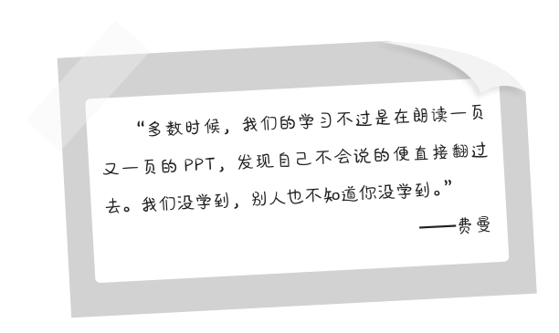

第十二章
以教代学
“以教代学”是费曼学习法的核心。他说：“如果你不能向其他人简单地解释一件事，那么你就还没有真正弄懂它。”这不是空洞的大道理，而是一套科学的学习方法。物理学家费曼把它变成了一个学习系统中至关重要的部分。即，在学习的过程中向其他人输出你学到的知识。假设有一个外行人站在面前，你要用对方听得懂的语言把这些知识解释给他听。经过反馈，再检查自己的学习效果。
在学习中，听、看和阅读是被动学习，这也是我们中国学生最擅长的技能。我在教学中遇见的99%的“好学生”，他们的思维和行为模式惊人的一致，那就是认真地听、拼命地记和反复地高强度练习，依靠勤奋促进知识的增长。但这些方式在内容留存率上处于偏低的水平（见下图）。只有以讨论、输出为主的学习方法，才能用较少的代价获得较高的内容留存率（见下图）。

在教学工作与自己的学习中，费曼的方法对我影响甚大。无论是自己写文章，还是向学生解释一些新的概念、知识点，我大量使用了类比的方式。有时候我自己并未彻底地理解，但也尝试在通俗的解读中与听者共同学习这些知识。不少与其他知识的类比是我在学习时自己产生的理解，然后在输出时从听者那里收取反馈，很好地修正自己的判断。
有位朋友给我举了一个例子。他是一名汽车工程师，当他学习汽车的机械原理时，对变速箱的工作原理学了很久也仍然不得其门而入，觉得很难搞懂。后来他到网上查找视频，看到一位国外的工程师在视频中介绍变速箱，其中有一句话：“我们可以将汽车的变速箱看作是山地自行车的变速齿轮。”这位朋友豁然开朗，按照这个方法，很快便明白了它的工作原理。
谁都能听懂
视频中的国外工程师在介绍变速箱的知识时使用的就是费曼学习法。他没有把书上晦涩难懂的专业术语拿出来贩卖，炫耀自己的知识深度，而是将汽车的变速箱类比为自行车的变速器，一下子就把专业语言“翻译”成了人人皆知的大白话，不懂汽车的门外汉也能听懂七八成——只要他懂自行车。想想看，生活中有几个人不懂自行车呢？
将注意力回转到你自己的行业，对于你来说，如果我让你用一段最简单和朴实的语言把你从事的工作或者你擅长的领域中的那些核心的知识讲给一个从未了解过这一行业的人，你认为自己能够做到吗？
如果你是天体物理学家，怎样用几句话就让从未学过物理的人明白“引力波”是什么？
如果你是一位作家，你能把一首充满生僻字的《诗经》里的短诗向从未上过学的文盲解释清楚吗？
如果你是战斗机驾驶员，如何用两三句话就让一名小学生听懂飞机发动机的工作原理或者飞机是怎么拐弯的？
如果你是软件工程师，你能让完全不懂电脑的人很快了解电脑病毒的攻击模式吗？
以教代学最重要的一个要求就是，你必须做到在解释这个概念时只需把它写成一两句话，说出来，就能让一个完全不了解甚至没听说过这个领域的菜鸟听得懂，还要有很深的印象。你要用最通俗的语言去阐述它，用最普通的词语和最短的句子，同时做到精准无误。这就可以让你在传授这个概念之时检查自己是否真的已经学到了全部知识，加深对于知识的理解，顺带发现那些隐藏的问题。
不久前我读到一篇故事，讲的是一位农民，他大字不识一个，但他的女儿考上了清华，儿子考上了北大。有人对他说：“你这人可真厉害，是不是在教育上有绝招？说出来分享一下？”这位农民直挠头，老老实实地说：“我没文化，哪懂什么绝招？我只是觉得，孩子上学不容易，要花很多钱，费很大的精力，一定要对得起这些投入。所以当孩子放学回家后，我就让他们把老师当天讲的课对我讲一遍，就当我是一个学生。如果我有听不懂的地方，就让孩子解释。如果孩子解释不出来，我就让他回到学校后请教老师。这么一来，我的孩子学习的劲头就很好，因为他们要回家教我的嘛！学习成绩也一直很好，从小学到高中，从来都是名列前茅。”
他所使用的就是费曼学习法，虽然他自己意识不到，但无形中帮助孩子用以教代学的模式在学习中获得了高于其他同学的效果。每当想到这个故事，我总有一股把它讲给自己学生家长的冲动。家长在家庭教育中不能只负责检查作业，督训孩子的学习，还要主动当一名听众。这位父亲不仅让孩子成为优秀的学生，还无意间使自己的孩子扮演了优秀老师的角色，锻炼了他们的语言表达能力，培养了他们的思维能力，可谓一举三得。
简洁和有深度的分析
网上曾经有一门十分流行的课程，名字叫作《如何成为有效学习的高手》。主讲人向听众分享他在学习方面的经验时，讲到的第一个原则就是——学完一门知识，他就将它制作成课程，挂到互联网销售。这位主讲人的思路也是费曼学习法“以教代学”的方法，既是目标，还是一种倒逼式的学习策略。
试想一下，将你学到的知识制作成一个人们愿意付费购买的课程需要具备哪些条件呢？这就让学习不再是你一个人的事情，因为人们花钱买你的知识肯定不是随便看看的，是为了从你这里学到有用的东西；现代社会的生活和工作节奏越来越快，人们也不想在读书求知上花费太多的时间，所以你的课程必须简洁易懂，不能让人一边看一边查资料；同时，还要具有自己独特的分析，也就是知识的深度，学了以后能够解决实际的问题，这样人们才觉得钱花得值。那么，在输出知识时你就不能简单地复制粘贴，而是既能总结出知识的精华，又能加上自己深刻的理解，还要用大家都能看懂、听懂的语言往外传播。
第一，语言简洁易懂。
正如前面所说，你在阐述一门知识时能否让一位没文化的农民也能立刻听得懂？另外，能否做到用最少的话表达出最多的内涵？这很考验我们的语言组织和对精华知识的归纳能力。
第二，精准到位，没有歧义。
要精准，就要用对词，既精练又犀利地把知识阐述清楚，要保证听者第一时间就能够领会到你的观点，而且跟知识的原义相符不会产生误解。当然可以有误差，但不能出现根本的偏差。
第三，讲出一定的深度。
要有深入的分析和延伸，讲出知识的应用和比较重要的价值。不能仅是肤浅的阐述，否则以教代学就失去了应有的意义。大部分人很难做到这一点，是因为他们在学习时从来不思考，总是囫囵吞枣，以死板的记忆而不是以深入的思考和灵活的应用为目的。这样的学习在输出知识时便自然而然地缺乏深度，只能充当一个复读机的角色。
第四，加上自己的理解。
在把知识教授给别人时适当加入自己的原创观点，或者举一反三，引入其他的知识作为比照，在对比中突出你所具备的知识的特点。这么做可以通过听者的反馈来验证自己的理解，有机会发现问题，回去再从进一步的学习中改善这些问题。
强化认知
阐述知识的同时，我们也在强化自己对于知识尤其是重点内容的认知。这个价值一点也不难明白，看起来是你在教授别人，其实是在以输出的方式促使自己对于“重点内容”进行二次学习，直到彻底地理解和掌握这些内容。

PPT是一种简化版的信息记录平台，亦可称作概要，上面有的是只言片语。这种蜻蜓点水的学习状态你也可以想象成是在将电影胶片在一个粗放的镜头前面飞快地拉过去，每一帧上的信息是有限的，缺一两帧也不易被人发现。我们在学习时发现自己不明白的地方，有可能便直接忽略，其他人也不会知道。这种就易避难的做法，正是我们平时学习时根深蒂固的坏习惯。我们清楚这不对，可很难改正。
但是，当我们需要放弃一个人学习的“默读模式”转而去教授别人，要把一个知识点分解开传递给对方，并且保证让他100%地理解这个知识点时，PPT或胶片模式便不管用了，我们要切换到类似于写作的全神贯注的状态。
写作是什么状态呢？首先，需要作者一字一句地斟酌，每个字都要自圆其说，每句话都要逻辑严密，承前启后。因为读者阅读时不会一扫而过，而是细细地品味，一旦存在情节的漏洞或在逻辑上说不过去，作品就是失败的。其次，写作也需要作者对内容做到深入的理解，尤其是驾驭知识的难点。如果你自己都不理解，那就无法写出来让读者认同和接受。
以写作的模式去对待知识，学习知识，输出知识，我们就不得不反复思考其中重要的知识点，提炼语言，然后才能成功地实施以教代学、以教促学的学习方法。费曼说：“当你要把一个知识教给别人时，等于打开了一系列的开关。”包括思考的开关、逻辑的开关、语言组织能力的开关等。就算你不是一名优秀的知识传授者，上述原则中总有一两条完成得不那么完美，至少也能让自己对知识的理解比过去更为深刻。只要能够取得进步，我们的努力便已经获得了一个及格的分数。
你能让7岁的孩子理解一个高等物理术语吗？
有一年，我曾经尝试让7岁的侄女知道什么是股票、黑洞、波粒二象性、薛定谔的猫等对这个年龄段的孩子过于高深的知识。有些概念她连词语的表意都不清楚，也从未听说过。那是一个无比奇妙的过程，对我有很多的启迪。我发现，孩子的理解能力其实一点也不低，当你表述得当时，他们可以接受一些远远超出成人想象的知识，也能和你互动。
如果我这样对她说：“波粒二象性是微观粒子的基本属性之一，微观粒子有时显示出波动性，有时又显示出粒子性。像光，它既是波，又是粒子，两种属性同时存在。”她肯定听不懂，甚至会觉得我这人莫名其妙，唠唠叨叨不知在说什么语言，一点也不好玩。
我不能对小孩讲一堆物理术语，而是换了一种表达方式，问她：“你知道光是怎么回事吗？”
她说：“别小瞧我，我当然知道，灯泡通电会发光，手电筒会发光，火柴点着了会发光，太阳和月亮也会发光。”
我又问：“那你知道光怎么运动吗？”
她毫不犹豫地回答：“光跑这么快，一定是直线！”
我摇摇头：“不是，光既跑直线，又跑曲线。有个知识叫‘波粒二象性’，说的就是这个事情。”
侄女的眼睛顿时瞪得很大：“真的吗，我怎么看不见？”她去房间拿出手电筒打开，在墙上照来照去，试图找到光走曲线的证据。
我说：“跟我来！”去水龙头倒了一盆水，从花园找了一颗石子，“看着。”我把石子扔进盆里，水面顿时泛起了涟漪。她迷惑地抬起头：“这是什么意思？”我解释说：“这就是波粒二象性的一种表现，就像水激起的浪纹一样，波动着往前走，你再看看是不是？”
侄女眼睛一亮：“是不是也像个螺旋？”
尽管形容不太准确，但她大体明白了这个知识。经过进一步的聊天，她知道光是由光子构成的，光子体现粒子性，行走的路线又体现波动性。对7岁的孩子来说这已殊为不易。我对她描述这个内容时，没有使用一个专业术语，而是用水的波纹进行了类比，她非常快地听懂了这个知识的内涵。
让听者在他的能力和已知知识的范围内可以迅速地理解，是我们输出知识时的一个基础原则。否则你就是在鸡同鸭讲，对方听不懂，你自己也很累。你懂得什么并不重要，能让任何人都能听明白，才代表你真正地学透了这个知识。